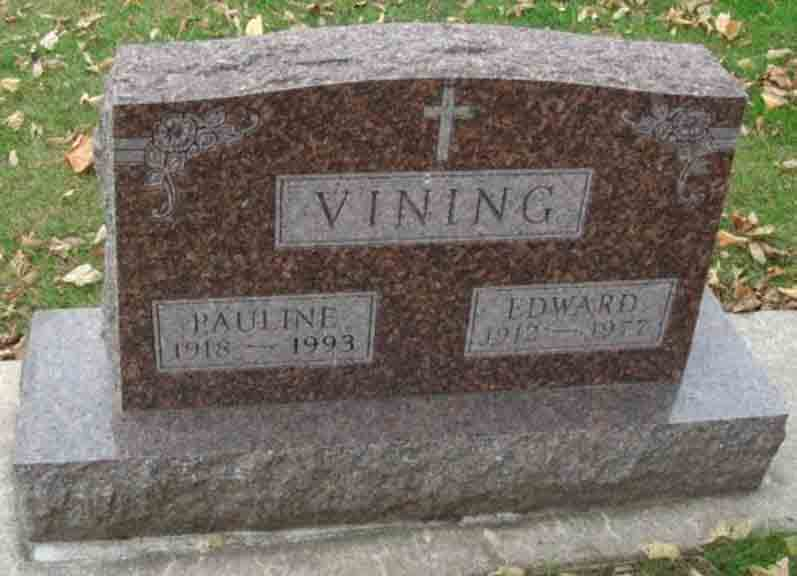

Documentation for Edward Penfield Vining - Pauline Doris Chinnery
Death Data
Headstone for Edward Penfield Vining and Pauline Doris (Chinnery) Vining, in Riverside Cemetery, Charles City, Floyd County, Iowa (from Find A Grave):
